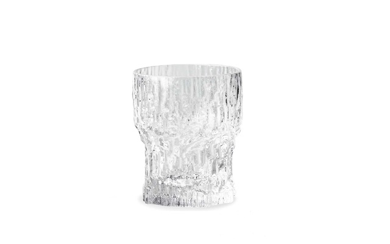
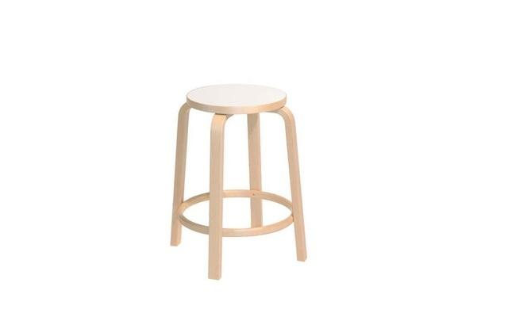
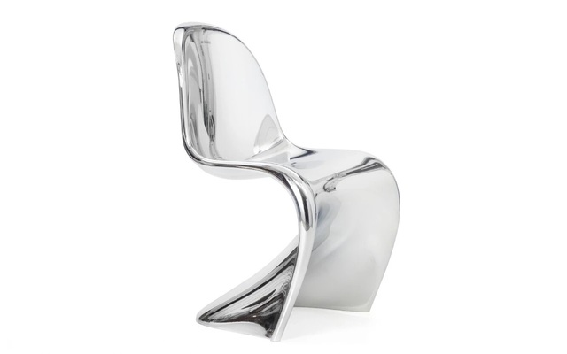

Scandinavia has impacted the modern world's design methodologies via 2 main streams:
Scandinavian design has globally influenced interior decor via it's methodologies of simplicity & functionality. It employs a simplistic philosophy by valuing elements such as negative space, which not only delivers a clean cut look, but then in turn provides the additional functional benefit of a clutter free space1. The colour palette for this design scheme is pale light colours like white which contributes to the clean look, reflects more natural light, and dominates the colour palette less2, which enhances the minimalist aesthetic, and also allows for contrasting colours to be used as accents3. Wood is also often used for contrast4 which highlights the next principle of this design philosophy which is it’s appreciation of nature5. To that end, plants are often used as decor pieces6, succulents being a common selection. A prevalent design scheme seen often is white walls, and wood floor7. Contrasting colours may be used for accents on pieces like drapes or lamps. Contrasting colours may be dark colours like black, or bright ones that pop8 like blood orange, the main point is that they should have a deep hue to contrast against the negative space of pale colours taking up the background. The emphasis on negative space is due to the design principle of minimalism which stems from Scandinavian homes being expensive and small, making utilization of space an important focus9. It is said that Scandinavian design principles became especially popular after the industrial revolution as it’s appreciation for nature brought us back to our roots which we were starting to increasingly stray away from due to our increasing involvement with machines10. Illumination wise, this design scheme employs lots of light and illumination within it’s rooms. Reason being Scandinavian countries have long winters with limited daylight, so they try to maximize the amount of natural light entering their homes11.
Swedish company Ikea, one of the biggest players in the furniture industry makes evident the impact Scandinavian design has on the furniture industry. Other notable landmarks of influence are the iconic Scandinavian designed egg chairs that were featured in the famous Men in Black movie, Panton chairs that were popular in the 60s, Finlandia glassware, and Alvar Aalto stools that were originally used in all the Apple stores12. The design principles are again simplicity & functionality. This minimalist aesthetic leads to an elegant & chic look, making it suitable for upscale businesses and dwellings where it is prevalently seen. Natural materials are again dominant, textiles like leather, wool, linen, and often wood13. Woods usually consist of Beech, Pine, or Ash which are predominant in the Scandinavian countries14. They also have minimal grain, knots, and dark marks15 which fit the minimal, plain, solid-coloured aesthetic well. Colours are again light & neutral with dark or deep colours used as contrasts or accents. Within Scandinavian culture is a concept known as ‘Hygge’ which translates to comfort or cozy16. The concept of Hygge has impacted Scandinavian design, and so we see elements of comfort in this design philosophy via things like warm lighting, and plush upholstery, bedding, and furniture17.
  Image CitationsHover over image to view sourceClick image to visit source |
Text CitationsHover over superscript reference to view sourceClick superscript reference to visit source |
|---|